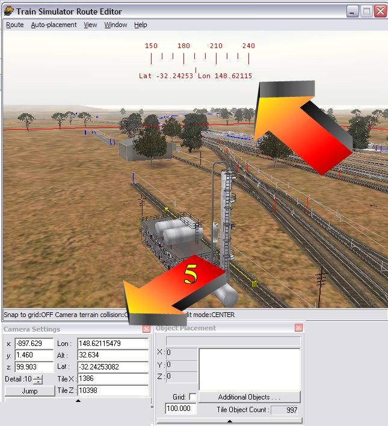
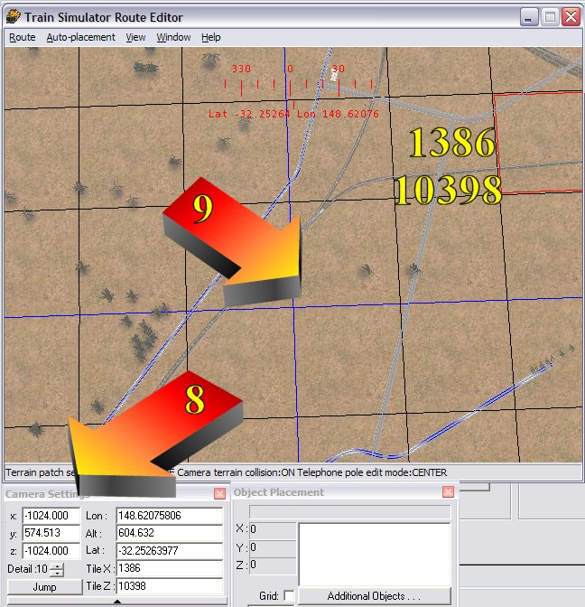

Route Riter Converts Latitude/Longitude to Tile Co-Ordinates
by Yuri Sos
Overview
- Open Route_Riter.
Click on the "Misc Options" (arrow "1" below) tab; Type in your latitude and longitude in decimal format (arrow "2" below); then click Calculate (arrow "3" below).
- The World Tile co-ordinates and Tile Filename appear in the appropriate dialogue boxes (arrow "4" below);

- As you can see, the lat/long and tile co-ordinates match perfectly (see arrow "5").

- You can go the other way: click "Clear" then type in your tile co-ordinates (see arrow "6").
- Click "Calculate" and the lat/longs appear (see arrow "7").
- When you copy/paste these co-ordinates into the RE Camera Position and press "jump" (arrow "8" below), the camera position is at the south-westernmost corner or the appropriate tile (see arrow "9" below).
